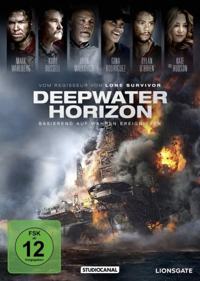

#5726 Deepwater Horizon
Auszeichnungen: für 2 Oscars nominiert
 
 IMDB-Wertung: 7.2 / 10
IMDB-Wertung: 7.2 / 10  Tomatometer: 83
Tomatometer: 83  Metascore: 0
Metascore: 0 
Die Ölbohranlage Deepwater Horizon steht 2010 kurz vor einem bahnbrechenden Meilenstein: Mehr als 100 Millionen Barrel Öl sollen nur 70 Kilometer vom US-Festland entfernt direkt aus dem Golf von Mexiko gefördert werden. Die beiden Chef-Techniker Mike Williams und Jimmy Harrell werden damit beauftragt, gemeinsam mit ihren Teams die Bohrung vorzubereiten. Dabei bemerken sie, dass der Druck auf das Bohrloch viel zu hoch ist, um bedenkenlos fortfahren zu können. Doch ihre Warnungen werden ignoriert und so kommt es zum katastrophalen „Blowout“, bei dem Gas und Öl unkontrolliert und unter enormen Druck an die Oberfläche schießen. Das zieht gewaltige Explosionen nach sich, Öl strömt ungehindert ins Meer und über 120 Menschen sind auf der Bohrinsel eingeschlossen. Williams und seinen Leuten bleibt nicht viel Zeit, Überlebende und Verletzte zu retten...
Jahr: 2016
Dauer: 107 Minuten
FSK: 12
Land: Hong-Kong Studio: StudioCanalTonspuren: DTS - ,
Untertitel: Deutsch,
Auflösung: 1080p (1920x800) Größe: 6860 MB
Genre: Thriller, Drama
Regisseur:  Peter Berg
Peter Berg
Drehbuch: Ryûta Hôrai
Soundtrack:
Darsteller:
 Mark Wahlberg als Mike Williams
Mark Wahlberg als Mike Williams Kurt Russell als Jimmy Harrell
Kurt Russell als Jimmy Harrell Douglas M. Griffin als Landry
Douglas M. Griffin als Landry James DuMont als O'Bryan
James DuMont als O'Bryan Joe Chrest als Sims
Joe Chrest als Sims Gina Rodriguez als Andrea Fleytas
Gina Rodriguez als Andrea Fleytas Brad Leland als Kaluza
Brad Leland als Kaluza John Malkovich als Vidrine
John Malkovich als Vidrine David Maldonado als Kuchta
David Maldonado als Kuchta J.D. Evermore als Dewey A. Revette
J.D. Evermore als Dewey A. Revette Ethan Suplee als Jason Anderson
Ethan Suplee als Jason Anderson Jason Kirkpatrick als Aaron Dale Burkeen
Jason Kirkpatrick als Aaron Dale Burkeen Robert Walker Branchaud als Doug Brown
Robert Walker Branchaud als Doug Brown Dylan O'Brien als Caleb Holloway
Dylan O'Brien als Caleb Holloway- Jonathan Angel als Gordon Jones
- Jeremy Sande als Adam Weise
 Kate Hudson als Felicia
Kate Hudson als Felicia- Stella Allen als Sydney
 Peter Berg als Mr. Skip
Peter Berg als Mr. Skip- Juston Street als Anthony Gervasio
- Chris Ashworth als Coast Guard Officer #1
- Graham McGinnis als Coast Guard Officer #2
- Henri Esteve als Andrea's Housemate
 Mustafa Harris als Bankston Crewman / Medic
Mustafa Harris als Bankston Crewman / Medic Henry Frost als Shane M. Roshto
Henry Frost als Shane M. Roshto- Terry Milam als Keith Blair Manuel
 Garrett Kruithof als Karl Kleppinger Jr.
Garrett Kruithof als Karl Kleppinger Jr.- Michael Howell als Roy Wyatt Kemp
 Deneen Tyler als Paula Walker
Deneen Tyler als Paula Walker Jim Klock als Scared Crew Member
Jim Klock als Scared Crew Member Garrett Hines als Wyman Wheeler
Garrett Hines als Wyman Wheeler Rob Steinberg als BP Rep
Rob Steinberg als BP Rep Trace Adkins als Massive Man
Trace Adkins als Massive Man- Ilan Muallem als Outgoing DPO
- Trent Zimmer als DP Officer
- Randolph Perkins als Rig Worker #1
- Anthony 'Ace' Thomas als Paula's Husband
- Tracy B. Mann als Bankston Survivor #2
- Frédéric North als Helicopter Pilot
 Michael D. Anglin als Roughneck , uncredited
Michael D. Anglin als Roughneck , uncredited Sue-Lynn Ansari als Passengers , uncredited
Sue-Lynn Ansari als Passengers , uncredited- Robert Arceneaux als Rov tech , uncredited
 John L. Armijo als Roughneck , uncredited
John L. Armijo als Roughneck , uncredited- Rusty Bourg als Lifeboat #1 , uncredited
- Justin Burkhamer als Rig Survivor , uncredited
 Jeff Caperton als Rough Neck - Survivor , uncredited
Jeff Caperton als Rough Neck - Survivor , uncredited- Devin Lord Chachere als Rig Survivor , uncredited
- Stephen J. Cortez als Rig Survivor , uncredited
 Francis Dobrisky als Roughneck , uncredited
Francis Dobrisky als Roughneck , uncredited- Bud Galloway als Lifeboat Evacuee , uncredited
Datei: X:\2016(A-F)\Deepwater Horizon (2016, FSK12, 1920x800).mkv seit 15.03.2017
Festplatte: HD 2016(A-Z)
 Es gibt insgesamt 147 Filme in der Gruppe '2016(A-F)'
Es gibt insgesamt 147 Filme in der Gruppe '2016(A-F)'